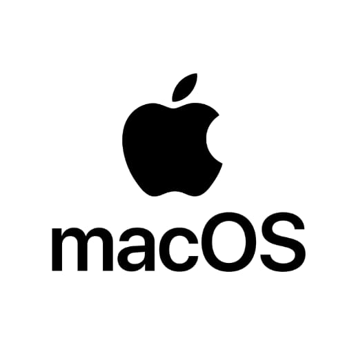

Mac OS X Snow LeopardMac OS X Snow Leopard, lanzado en 2009, se enfocó en mejorar el rendimiento y la eficiencia del sistema. Fue aclamado por su estabilidad y compatibilidad con software. Requisitos Mínimos:
|
Explora la evolución de macOS, las versiones más destacadas y los requisitos mínimos para su instalación.
Historia de macOSmacOS es el sistema operativo desarrollado por Apple para sus computadoras Mac. Originalmente conocido como "Mac OS X", fue lanzado en 2001 como una evolución del sistema clásico de Apple, basándose en la tecnología UNIX para mayor estabilidad y seguridad. macOS se destaca por su diseño elegante, su facilidad de uso y su integración profunda con otros productos Apple, como iPhone, iPad y Apple Watch. Desde sus inicios, ha pasado por numerosas actualizaciones, mejorando en rendimiento, seguridad y capacidades de conectividad.  |
Versiones Principales de macOSHasta el momento existen diecinueve actualizaciones, de las que la más reciente es la actual Mac OS 14.0 "Sonoma", seguido de Mac OS 13.0 "Ventura", de Mac OS 12.0 "Monterey", Mac OS 11.0 "Big Sur", MacOs 10.15 llamada "Catalina", MacOs 10.14 llamada "Mojave", MacOS 10.13 llamada "High Sierra" |
Mac OS X Snow LeopardMac OS X Snow Leopard, lanzado en 2009, se enfocó en mejorar el rendimiento y la eficiencia del sistema. Fue aclamado por su estabilidad y compatibilidad con software. Requisitos Mínimos:
|
macOS SierramacOS Sierra, lanzado en 2016, introdujo Siri a las computadoras Mac y mejoró la integración con iCloud y dispositivos iOS. Además, permitió a los usuarios desbloquear su Mac con un Apple Watch. Requisitos Mínimos:
|
macOS MojavemacOS Mojave, lanzado en 2018, introdujo el Modo Oscuro y mejoras en la organización del escritorio con Pilas. Esta versión fue notable por sus innovaciones visuales y mejoras en la seguridad. Requisitos Mínimos:
|
macOS Big SurmacOS Big Sur, lanzado en 2020, presentó una renovación visual completa y la transición hacia los procesadores Apple Silicon. Esta versión marcó un cambio importante en la arquitectura de los dispositivos Mac. Requisitos Mínimos:
|